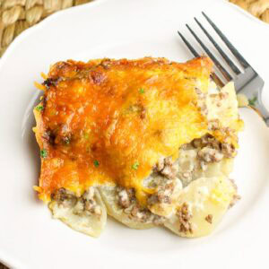

Cheesy Ground Beef Potato Casserole

Description
A warm and cozy comfort meal that the whole family will enjoy
Ingredients
- 1.5 pounds lean ground beef
- 1 medium onion chopped
- 2 cloves garlic minced
- 1 teaspoon kosher salt
- 1/2 teaspoon black pepper
- 1/2 teaspoon paprika
- 10.5 ounce can condensed cream of mushroom soup
- 1/2 cup sour cream
- 5 medium russet potatoes, thinly sliced
- 2 cups shredded cheddar cheese
Steps
- Preheat oven to 375ºF and grease a 9x13 baking dish
- Cook ground beef, onion, and garlic until browned. Drain fat and season with salt, pepper, and paprika
- Mix cream of mushroom soup, sour cream, and beef broth in a bowl
- Layer sliced potatoes, beef mixture, and soup mixture in the dish. Repeat layers
- Cover with foil and bake for 45 minutes. Remove foil, add cheddar cheese, and bake 15 minutes more
- Rest for 10 minutes before serving
Home